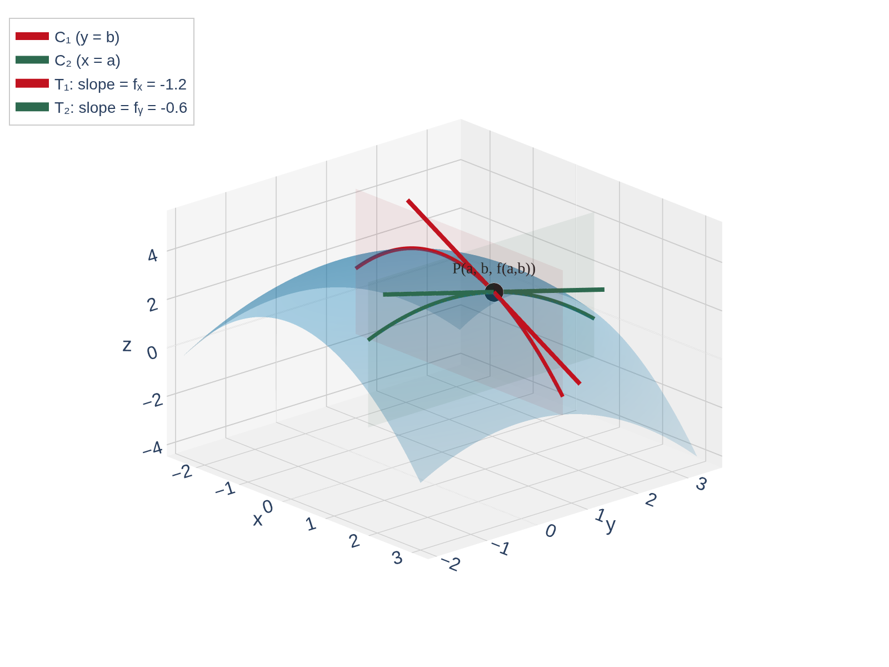

Partial Derivatives
MTH 310 — Calculus III
Partial Derivatives
In Calc I, \(f'(x)\) measures how \(f\) changes as \(x\) changes.
For \(f(x,y)\), we have two input variables. How do we measure the rate of change?
Idea: Change one variable at a time, holding the other constant.
\[f_x(x,y) = \lim_{h \to 0} \frac{f(x+h,\, y) - f(x,y)}{h}\]
\[f_y(x,y) = \lim_{k \to 0} \frac{f(x,\, y+k) - f(x,y)}{k}\]
Notation: All of these mean the same thing:
\[f_x = \frac{\partial f}{\partial x} = \frac{\partial}{\partial x} f(x,y) = D_x f\]
These are just Calc I derivatives in disguise. The only new idea: hold the other variable constant.
The Rule: To find \(f_x\), treat \(y\) as a constant and differentiate with respect to \(x\) using all your Calc I rules.
For \(f_y\), treat \(x\) as a constant and differentiate with respect to \(y\).
You already know how to do this! Every derivative rule from Calc I (power, product, quotient, chain) still applies — you're just ignoring one variable.
Find \(f_x\) and \(f_y\) for \(f(x,y) = 3x^2 y + xy^2 + y - 1\).
For f_x, treat y as a constant. For f_y, treat x as a constant.
Finding \(f_x\): Treat \(y\) as a constant and differentiate with respect to \(x\):
\[f_x = \frac{\partial}{\partial x}(3x^2 y) + \frac{\partial}{\partial x}(xy^2) + \frac{\partial}{\partial x}(y) - \frac{\partial}{\partial x}(1)\]
\[f_x = 6xy + y^2 + 0 - 0 = 6xy + y^2\]
Finding \(f_y\): Treat \(x\) as a constant and differentiate with respect to \(y\):
\[f_y = \frac{\partial}{\partial y}(3x^2 y) + \frac{\partial}{\partial y}(xy^2) + \frac{\partial}{\partial y}(y) - \frac{\partial}{\partial y}(1)\]
\[f_y = 3x^2 + 2xy + 1 - 0 = 3x^2 + 2xy + 1\]
Notice: in \(f_x\), the \(y\) and \(-1\) terms vanish (they're constants). In \(f_y\), the \(-1\) vanishes but \(y\) differentiates to \(1\).
Find \(f_x\) and \(f_y\) for \(f(x,y) = x^2 \ln y + y \sin x\).
For f_x, treat y as a constant — which terms involve x? For f_y, treat x as a constant.
\(f_x\): Treat \(y\) as constant:
\[f_x = 2x \ln y + y \cos x\]
(\(x^2 \to 2x\) by power rule, \(\sin x \to \cos x\), and \(\ln y\) and \(y\) are just constant factors)
\(f_y\): Treat \(x\) as constant:
\[f_y = \frac{x^2}{y} + \sin x\]
(\(\ln y \to 1/y\), and \(\sin x\) is a constant that differentiates to \(\sin x \cdot 1 = \sin x\))
Different Calc I rules for each variable: power rule and trig in \(f_x\), logarithm and constants in \(f_y\). The partial derivative picks out the rules that apply to its variable.
Slice the surface \(z = f(x,y)\) with the plane \(y = b\).
This gives a trace curve \(C_1\) in the \(xz\)-plane.
\(f_x(a,b)\) = slope of the tangent to \(C_1\) at the point \((a,\, b,\, f(a,b))\).
Similarly, slicing with \(x = a\) gives a trace \(C_2\), and \(f_y(a,b)\) is the slope of the tangent to \(C_2\).

\(f_x(a,b)\) = slope in the \(x\)-direction. \(f_y(a,b)\) = slope in the \(y\)-direction. Each partial derivative captures only one direction of change.
Find both partial derivatives of \(f(x,y) = x^y\).
This is interesting because \(x\) and \(y\) play different roles — one is the base, one is the exponent.
For f_x, treat y as constant (power rule). For f_y, treat x as constant (exponential rule).
\(f_x\): Treat \(y\) as a constant. Then \(x^y\) is a power function in \(x\):
\[f_x = y x^{y-1} \qquad \text{(power rule)}\]
\(f_y\): Treat \(x\) as a constant. Then \(x^y\) is an exponential function in \(y\):
\[f_y = x^y \ln x \qquad \text{(exponential rule: } \frac{d}{dy} a^y = a^y \ln a \text{)}\]
Same function, two completely different differentiation rules! Which rule you use depends on which variable you're differentiating with respect to.
The heat index \(I\) is the perceived temperature as a function of actual temperature \(T\) and relative humidity \(H\).
Use the table to estimate \(f_T(96, 70)\) and \(f_H(96, 70)\), and interpret each.
| \(T\) | |||||||||
|---|---|---|---|---|---|---|---|---|---|
| \(H\) | 50 | 55 | 60 | 65 | 70 | 75 | 80 | 85 | 90 |
| 90 | 96 | 98 | 100 | 103 | 106 | 109 | 112 | 115 | 119 |
| 92 | 100 | 103 | 105 | 108 | 112 | 115 | 119 | 123 | 128 |
| 94 | 104 | 107 | 111 | 114 | 118 | 122 | 127 | 132 | 137 |
| 96 | 109 | 113 | 116 | 121 | 125 | 130 | 135 | 141 | 146 |
| 98 | 114 | 118 | 123 | 127 | 133 | 138 | 144 | 150 | 157 |
| 100 | 119 | 124 | 129 | 135 | 141 | 147 | 154 | 161 | 168 |
\\[2pt]\small Heat index values for temperature T (\(^\circ\)F) and relative humidity H (\%)
Use the difference quotient with nearby table values. Hold one variable constant while varying the other.
Estimating \(f_T(96, 70)\): Hold \(H = 70\) constant, use \(T = 94\) and \(T = 98\):
\[f_T(96, 70) \approx \frac{f(98, 70) - f(94, 70)}{98 - 94} = \frac{133 - 118}{4} = \frac{15}{4} = 3.75\]
Interpretation: When \(T = 96^\circ F\) and \(H = 70\%\), the heat index rises by about \(3.75\) for each \(1^\circ F\) increase in temperature.
Estimating \(f_H(96, 70)\): Hold \(T = 96\) constant, use \(H = 65\) and \(H = 75\):
\[f_H(96, 70) \approx \frac{f(96, 75) - f(96, 65)}{75 - 65} = \frac{130 - 121}{10} = \frac{9}{10} = 0.9\]
Interpretation: The heat index rises by about \(0.9\) for each \(1\%\) increase in humidity.
Partial derivatives work even when we don't have a formula — just data. The key idea: hold one variable constant, vary the other.
Just like in Calc I, we can differentiate again to get second (and higher) derivatives.
For \(f(x,y)\), there are four second-order partial derivatives:
Interpretation:
Notation warning: \(f_{xy}\) means differentiate with respect to \(x\) first, then \(y\). Read the subscripts left to right.
Are \(f_{xy}\) and \(f_{yx}\) always equal? That is, does the order of differentiation matter?
Suppose \(f\) is defined on a disk \(D\) containing the point \((a,b)\).
If \(f_{xy}\) and \(f_{yx}\) are both continuous on \(D\), then:
\[f_{xy}(a,b) = f_{yx}(a,b)\]
Practical use: For polynomials, trig functions, exponentials, and all the "nice" functions we encounter in this course, mixed partials are equal:
\[f_{xy} = f_{yx}, \qquad f_{xxy} = f_{xyx} = f_{yxx}, \qquad \text{etc.}\]
For any function built from standard Calc I functions, the order of differentiation doesn't matter. Differentiate in whichever order is easiest!
You are told that there is a function \(f\) whose partial derivatives are:
\[f_x(x,y) = x + 4y \qquad \text{and} \qquad f_y(x,y) = 3x - y\]
Should you believe it?
Check whether Clairaut's theorem is satisfied.
If such a function \(f\) existed, Clairaut's Theorem requires \(f_{xy} = f_{yx}\).
Check \(f_{xy}\): Start with \(f_x = x + 4y\), then differentiate with respect to \(y\):
\[f_{xy} = \frac{\partial}{\partial y}(x + 4y) = 4\]
Check \(f_{yx}\): Start with \(f_y = 3x - y\), then differentiate with respect to \(x\):
\[f_{yx} = \frac{\partial}{\partial x}(3x - y) = 3\]
Since \(f_{xy} = 4 \neq 3 = f_{yx}\), Clairaut's Theorem is violated.
NO — no such function exists! Clairaut's Theorem gives us a quick test: if \(f_{xy} \neq f_{yx}\), the proposed partials are inconsistent.
Verify that \(u = \ln\sqrt{x^2 + y^2}\) satisfies Laplace's equation:
\[u_{xx} + u_{yy} = 0\]
Laplace's equation appears throughout physics — it describes steady-state heat flow, electrostatics, and fluid flow.
Simplify u first, then find u_x, u_xx, u_y, u_yy, and add the second derivatives.
Simplify first: \(u = \ln\sqrt{x^2 + y^2} = \frac{1}{2}\ln(x^2 + y^2)\)
\(u_x\): \(u_x = \frac{1}{2} \cdot \frac{2x}{x^2 + y^2} = \frac{x}{x^2 + y^2}\)
\(u_{xx}\): Use the quotient rule:
\[u_{xx} = \frac{(x^2 + y^2)(1) - x(2x)}{(x^2 + y^2)^2} = \frac{y^2 - x^2}{(x^2 + y^2)^2}\]
\(u_y\): By symmetry, \(u_y = \frac{y}{x^2 + y^2}\)
\(u_{yy}\): \(u_{yy} = \frac{x^2 - y^2}{(x^2 + y^2)^2}\)
Check: \(u_{xx} + u_{yy} = \frac{y^2 - x^2}{(x^2 + y^2)^2} + \frac{x^2 - y^2}{(x^2 + y^2)^2} = \frac{0}{(x^2 + y^2)^2} = 0 \quad \checkmark\)
The numerators are negatives of each other, so they cancel perfectly. This is not a coincidence — \(\ln r\) is a fundamental solution to Laplace's equation in 2D.
If \(yz = \ln(x + z)\), find \(\dfrac{\partial z}{\partial x}\).
When \(z\) is defined implicitly as a function of \(x\) and \(y\), we differentiate both sides with respect to \(x\), treating \(y\) as a constant and \(z\) as a function of \(x\).
Differentiate both sides with respect to x. Remember z depends on x, so use the chain rule.
Differentiate both sides with respect to \(x\), holding \(y\) constant:
Left side: \(\frac{\partial}{\partial x}(yz) = y \frac{\partial z}{\partial x}\) — \(y\) is constant, \(z\) depends on \(x\)
Right side: \(\frac{\partial}{\partial x}\ln(x + z) = \frac{1}{x + z} \cdot \left(1 + \frac{\partial z}{\partial x}\right)\) — chain rule
Set equal and solve:
\[y \frac{\partial z}{\partial x} = \frac{1 + \frac{\partial z}{\partial x}}{x + z}\]
\[y(x + z)\frac{\partial z}{\partial x} = 1 + \frac{\partial z}{\partial x}\]
\[\frac{\partial z}{\partial x}\bigl[y(x + z) - 1\bigr] = 1\]
\[\frac{\partial z}{\partial x} = \frac{1}{y(x + z) - 1}\]
Same strategy as implicit differentiation in Calc I, but now we hold \(y\) constant and remember that \(z\) depends on \(x\).
\(f_x = \lim_{h \to 0} \frac{f(x+h,y) - f(x,y)}{h}\) — same as Calc I, holding \(y\) constant
Treat the other variable as a constant, then differentiate normally using all Calc I rules
\(f_x(a,b)\) = slope of tangent to the trace curve \(y = b\) at \((a, b, f(a,b))\)
\(f_{xx}\), \(f_{yy}\) = concavity; \(f_{xy}\), \(f_{yx}\) = mixed partials
\(f_{xy} = f_{yx}\) when both are continuous — order doesn't matter for nice functions
Differentiate both sides, use chain rule on \(z(x,y)\), solve for \(\partial z / \partial x\)
Big idea: Partial derivatives are just Calc I derivatives — hold one variable constant and differentiate with respect to the other. Clairaut says the order of mixed partials doesn't matter (for nice functions).
1, 2, 4, 5, 6, 9-36 odd, 39, 41, 45, 51, 63, 64, 80, 84a, 85